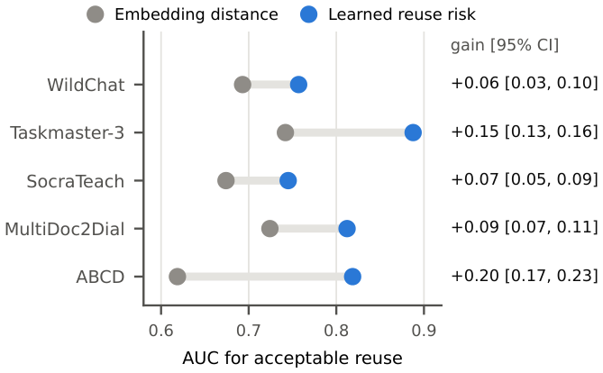

Multi-Turn Semantic Caching for Low-Cost LLM Serving
We estimate whether a cached reply from one conversation will answer a turn in another. On tutoring and ticket-booking workloads, our online policy avoids 35–41% of generation cost through acceptable reuse with a 1,000-entry cache.
@misc{atalar2026multiturn,
title = {Multi-Turn Semantic Caching for Low-Cost {LLM} Serving},
author = {Baran Atalar and Selly Beyene and Xutong Liu and Carlee Joe-Wong},
year = {2026},
eprint = {2611.01077},
archivePrefix = {arXiv},
url = {https://arxiv.org/abs/2611.01077}
}